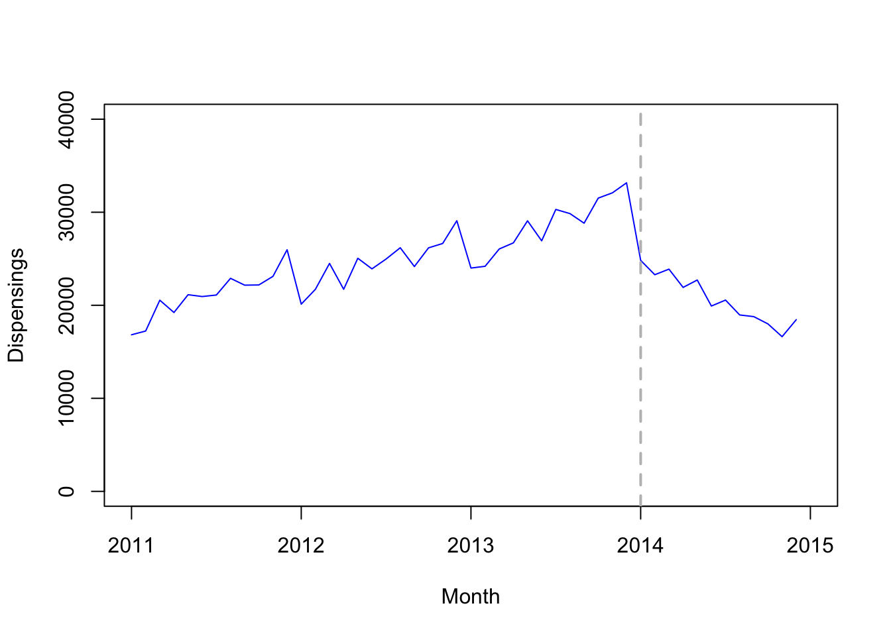
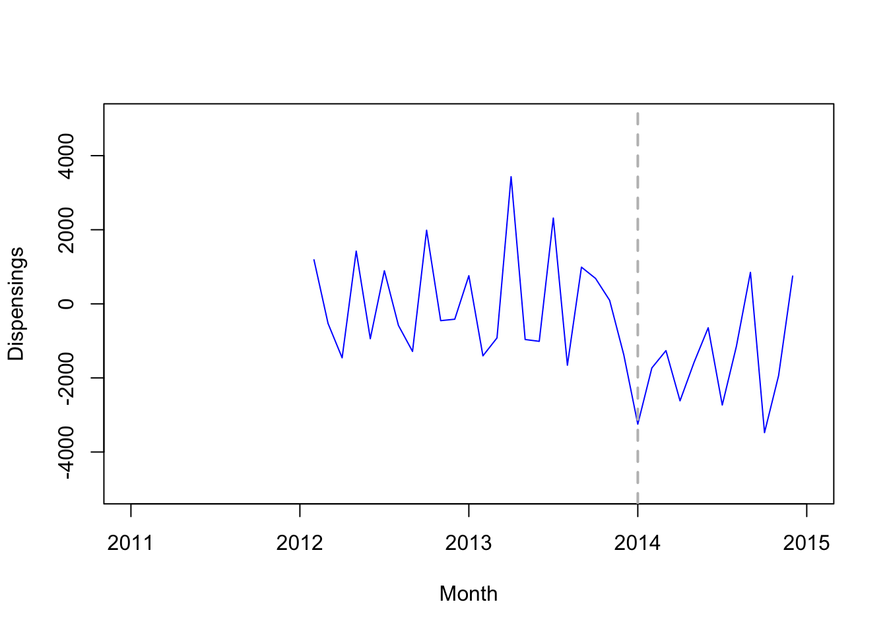
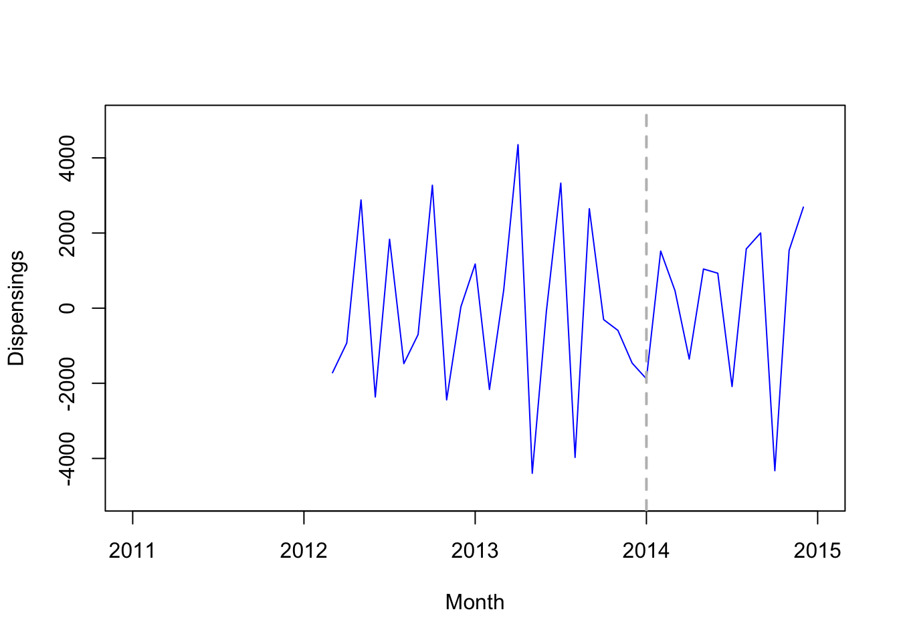
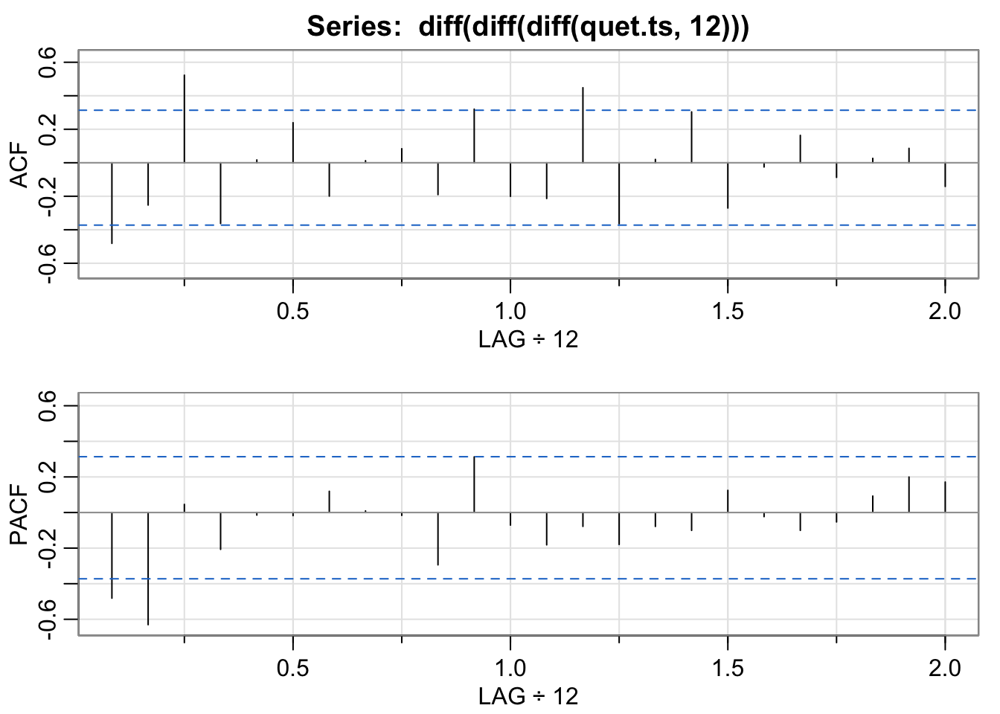
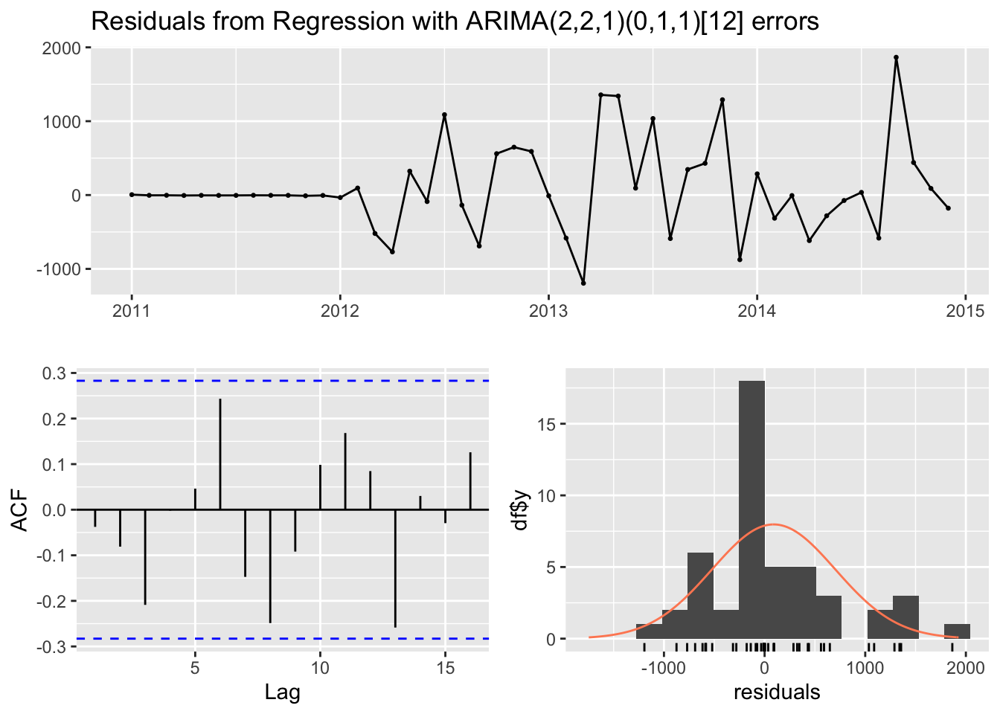
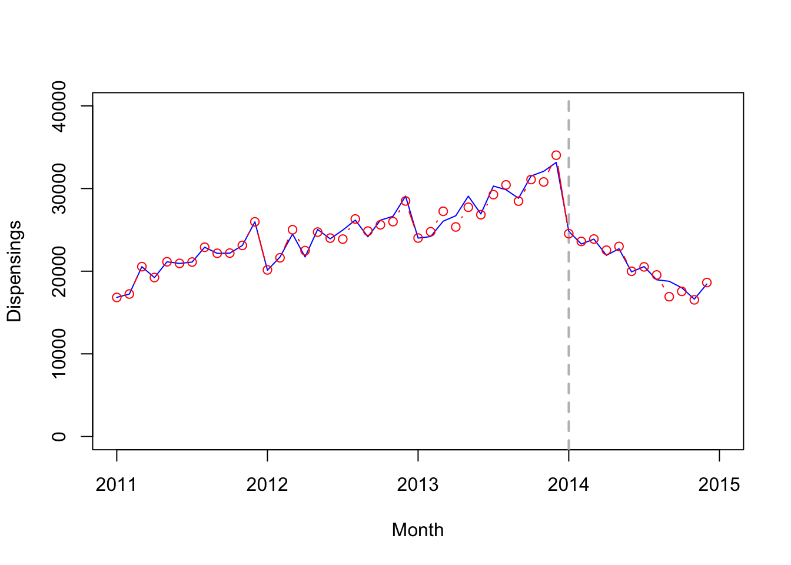
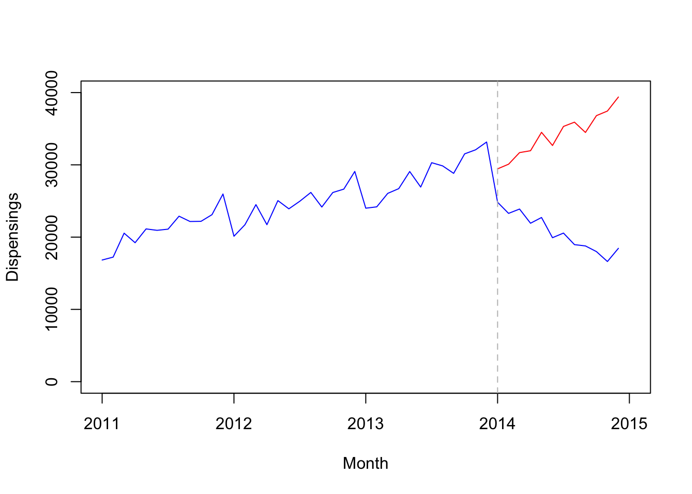

Chapter 9 Interupted Time Series (ITS) (2)
- Adapted from R codes in “Interrupted time series analysis using Autoregressive Integrated Moving Average (ARIMA) models: A guide for evaluating large-scale health interventions”
- Author: Dr. Andrea Schaffer
Install and load the following packages:
library(astsa)
library(forecast)
library(dplyr)
library(zoo)
library(tseries)9.1 Data
Load Data from csv:
quet <- read.csv(file = 'quet.csv')Convert data to time series object using ts():
quet.ts <- ts(quet[,2], frequency=12, start=c(2011,1))View data:
quet.ts## Jan Feb Mar Apr May Jun Jul Aug Sep Oct Nov Dec
## 2011 16831 17234 20546 19226 21136 20939 21103 22897 22162 22184 23108 25967
## 2012 20123 21715 24497 21720 25053 23915 24972 26183 24163 26172 26642 29086
## 2013 24002 24190 26052 26707 29077 26927 30300 29854 28824 31519 32084 33160
## 2014 24827 23285 23884 21921 22715 19919 20560 18961 18780 17998 16624 184509.2 Step 1: Plot data to visualize time series
options(scipen=5)
plot(quet.ts, xlim=c(2011,2015), ylim=c(0,40000), type='l', col="blue",
xlab="Month", ylab="Dispensings")
# Add vertical line indicating date of intervention (January 1, 2014)
abline(v=2014, col="gray", lty="dashed", lwd=2)
9.3 Step 2: Plot the differenced data
seasonal differencing:
plot(diff(quet.ts,12), xlim=c(2011,2015), ylim=c(-5000,5000), type='l',
col="blue", xlab="Month", ylab="Dispensings")
# Add vertical line indicating date of intervention (January 1, 2014)
abline(v=2014, col="gray", lty="dashed", lwd=2)
first order differencing:
plot(diff(diff(quet.ts,12)), xlim=c(2011,2015), ylim=c(-5000,5000), type='l',
col="blue", xlab="Month", ylab="Dispensings")
# Add vertical line indicating date of intervention (January 1, 2014)
abline(v=2014, col="gray", lty="dashed", lwd=2)
second order differencing
plot(diff(diff(diff(quet.ts,12))), xlim=c(2011,2015), ylim=c(-5000,5000), type='l',
col="blue", xlab="Month", ylab="Dispensings")
# Add vertical line indicating date of intervention (January 1, 2014)
abline(v=2014, col="gray", lty="dashed", lwd=2)
Test for stationary:
# first order differencing
adf.test(diff(diff(quet.ts,12))) # not significant - not passed - nonstationary##
## Augmented Dickey-Fuller Test
##
## data: diff(diff(quet.ts, 12))
## Dickey-Fuller = -2.3836, Lag order = 3, p-value = 0.4241
## alternative hypothesis: stationary# second order differencing
adf.test(diff(diff(diff(quet.ts,12)))) # significant - passed - stationary##
## Augmented Dickey-Fuller Test
##
## data: diff(diff(diff(quet.ts, 12)))
## Dickey-Fuller = -4.1471, Lag order = 3, p-value = 0.01591
## alternative hypothesis: stationary9.4 Step 3: View ACF/PACF plots of differenced/seasonally differenced data
acf2(diff(diff(diff(quet.ts,12))), max.lag=24)
## [,1] [,2] [,3] [,4] [,5] [,6] [,7] [,8] [,9] [,10] [,11] [,12] [,13] [,14] [,15] [,16]
## ACF -0.48 -0.25 0.52 -0.36 0.02 0.24 -0.20 0.01 0.08 -0.19 0.32 -0.20 -0.21 0.45 -0.36 0.02
## PACF -0.48 -0.63 0.05 -0.21 -0.01 -0.02 0.12 0.01 -0.02 -0.29 0.31 -0.07 -0.18 -0.08 -0.18 -0.08
## [,17] [,18] [,19] [,20] [,21] [,22] [,23] [,24]
## ACF 0.3 -0.27 -0.03 0.16 -0.09 0.03 0.09 -0.14
## PACF -0.1 0.12 -0.02 -0.10 -0.05 0.09 0.20 0.179.5 Step 4: Build ARIMA model
- Create variable representing step change and view
step <- as.numeric(as.yearmon(time(quet.ts))>='Jan 2014')
step## [1] 0 0 0 0 0 0 0 0 0 0 0 0 0 0 0 0 0 0 0 0 0 0 0 0 0 0 0 0 0 0 0 0 0 0 0 0 1 1 1 1 1 1 1 1 1 1 1 1- Create variable representing ramp (change in slope) and view
ramp <- append(rep(0,36), seq(1,12,1))
ramp ## [1] 0 0 0 0 0 0 0 0 0 0 0 0 0 0 0 0 0 0 0 0 0 0 0 0 0 0 0 0 0 0 0 0
## [33] 0 0 0 0 1 2 3 4 5 6 7 8 9 10 11 12- Use automated algorithm to identify p/q parameters
- Specify first difference = 2 and seasonal difference = 1
model1 <- auto.arima(quet.ts, # data
seasonal=TRUE, # seasonal differencing
xreg=cbind(step,ramp), # intervention effect
d=2, # non-seasonal differencing
D=1, # seasonal differencing
stepwise=FALSE, # exhaustive search
trace=TRUE) # show output ##
## Regression with ARIMA(0,2,0)(0,1,0)[12] errors : 632.2689
## Regression with ARIMA(0,2,0)(0,1,1)[12] errors : 632.4278
## Regression with ARIMA(0,2,0)(1,1,0)[12] errors : 633.4522
## Regression with ARIMA(0,2,0)(1,1,1)[12] errors : Inf
## Regression with ARIMA(0,2,1)(0,1,0)[12] errors : Inf
## Regression with ARIMA(0,2,1)(0,1,1)[12] errors : Inf
## Regression with ARIMA(0,2,1)(1,1,0)[12] errors : Inf
## Regression with ARIMA(0,2,1)(1,1,1)[12] errors : Inf
## Regression with ARIMA(0,2,2)(0,1,0)[12] errors : Inf
## Regression with ARIMA(0,2,2)(0,1,1)[12] errors : Inf
## ARIMA(0,2,2)(1,1,0)[12] : Inf
## ARIMA(0,2,2)(1,1,1)[12] : Inf
## Regression with ARIMA(0,2,3)(0,1,0)[12] errors : Inf
## Regression with ARIMA(0,2,3)(0,1,1)[12] errors : Inf
## ARIMA(0,2,3)(1,1,0)[12] : Inf
## ARIMA(0,2,3)(1,1,1)[12] : Inf
## Regression with ARIMA(0,2,4)(0,1,0)[12] errors : Inf
## Regression with ARIMA(0,2,4)(0,1,1)[12] errors : Inf
## Regression with ARIMA(0,2,4)(1,1,0)[12] errors : 590.0708
## Regression with ARIMA(0,2,5)(0,1,0)[12] errors : 590.8818
## Regression with ARIMA(1,2,0)(0,1,0)[12] errors : 624.3133
## Regression with ARIMA(1,2,0)(0,1,1)[12] errors : 622.3359
## Regression with ARIMA(1,2,0)(1,1,0)[12] errors : 624.5849
## Regression with ARIMA(1,2,0)(1,1,1)[12] errors : 624.5401
## Regression with ARIMA(1,2,1)(0,1,0)[12] errors : Inf
## Regression with ARIMA(1,2,1)(0,1,1)[12] errors : Inf
## Regression with ARIMA(1,2,1)(1,1,0)[12] errors : Inf
## Regression with ARIMA(1,2,1)(1,1,1)[12] errors : Inf
## Regression with ARIMA(1,2,2)(0,1,0)[12] errors : Inf
## Regression with ARIMA(1,2,2)(0,1,1)[12] errors : Inf
## Regression with ARIMA(1,2,2)(1,1,0)[12] errors : Inf
## Regression with ARIMA(1,2,2)(1,1,1)[12] errors : Inf
## Regression with ARIMA(1,2,3)(0,1,0)[12] errors : Inf
## Regression with ARIMA(1,2,3)(0,1,1)[12] errors : 590.0542
## Regression with ARIMA(1,2,3)(1,1,0)[12] errors : Inf
## Regression with ARIMA(1,2,4)(0,1,0)[12] errors : 590.9442
## Regression with ARIMA(2,2,0)(0,1,0)[12] errors : 594.9202
## Regression with ARIMA(2,2,0)(0,1,1)[12] errors : 593.8099
## Regression with ARIMA(2,2,0)(1,1,0)[12] errors : 594.9902
## Regression with ARIMA(2,2,0)(1,1,1)[12] errors : 598.047
## Regression with ARIMA(2,2,1)(0,1,0)[12] errors : 583.7067
## Regression with ARIMA(2,2,1)(0,1,1)[12] errors : 582.0326
## Regression with ARIMA(2,2,1)(1,1,0)[12] errors : 583.0498
## Regression with ARIMA(2,2,1)(1,1,1)[12] errors : Inf
## Regression with ARIMA(2,2,2)(0,1,0)[12] errors : 586.8934
## Regression with ARIMA(2,2,2)(0,1,1)[12] errors : 585.4786
## Regression with ARIMA(2,2,2)(1,1,0)[12] errors : 586.4878
## Regression with ARIMA(2,2,3)(0,1,0)[12] errors : Inf
## Regression with ARIMA(3,2,0)(0,1,0)[12] errors : 594.6178
## Regression with ARIMA(3,2,0)(0,1,1)[12] errors : 592.4205
## Regression with ARIMA(3,2,0)(1,1,0)[12] errors : 594.5297
## Regression with ARIMA(3,2,0)(1,1,1)[12] errors : 597.7892
## Regression with ARIMA(3,2,1)(0,1,0)[12] errors : 586.8978
## Regression with ARIMA(3,2,1)(0,1,1)[12] errors : 585.4799
## Regression with ARIMA(3,2,1)(1,1,0)[12] errors : 586.4936
## Regression with ARIMA(3,2,2)(0,1,0)[12] errors : 590.2986
## Regression with ARIMA(4,2,0)(0,1,0)[12] errors : 594.3236
## Regression with ARIMA(4,2,0)(0,1,1)[12] errors : 594.4433
## Regression with ARIMA(4,2,0)(1,1,0)[12] errors : 595.68
## Regression with ARIMA(4,2,1)(0,1,0)[12] errors : 589.9171
## Regression with ARIMA(5,2,0)(0,1,0)[12] errors : 591.9875
##
##
##
## Best model: Regression with ARIMA(2,2,1)(0,1,1)[12] errors9.6 Step 5: Check residuals
checkresiduals(model1)
##
## Ljung-Box test
##
## data: Residuals from Regression with ARIMA(2,2,1)(0,1,1)[12] errors
## Q* = 12.358, df = 6, p-value = 0.05443
##
## Model df: 4. Total lags used: 10Estimate parameters and confidence intervals
summary(model1)## Series: quet.ts
## Regression with ARIMA(2,2,1)(0,1,1)[12] errors
##
## Coefficients:
## ar1 ar2 ma1 sma1 step ramp
## -0.8877 -0.6860 -0.9847 -0.6883 -3374.9701 -1512.6228
## s.e. 0.1267 0.1278 0.1742 0.5968 594.9716 141.0875
##
## sigma^2 = 643481: log likelihood = -281.86
## AIC=577.72 AICc=582.03 BIC=588.41
##
## Training set error measures:
## ME RMSE MAE MPE MAPE MASE ACF1
## Training set 90.03804 612.6693 406.6706 0.32673 1.631969 0.07880153 -0.03762714confint(model1)## 2.5 % 97.5 %
## ar1 -1.1360795 -0.6394194
## ar2 -0.9365305 -0.4354141
## ma1 -1.3260894 -0.6434103
## sma1 -1.8579336 0.4813390
## step -4541.0931265 -2208.8471546
## ramp -1789.1491264 -1236.0964099Plot data to visualize time series
options(scipen=5)
plot(quet.ts, xlim=c(2011,2015), ylim=c(0,40000), type='l', col="blue", xlab="Month", ylab="Dispensings")
# Add vertical line indicating date of intervention (January 1, 2014)
abline(v=2014, col="gray", lty="dashed", lwd=2)
lines(fitted(model1), col="red", type="b")
9.7 Step 6: Calculate forecasts
To forecast the counterfactual, model data excluding post-intervention time period
model2 <- Arima(window(quet.ts, end=c(2013,12)),
order=c(2,2,1),
seasonal=list(order=c(0,1,1), period=12))Forecast 12 months post-intervention and convert to time series object
fc <- forecast(model2, h=12)
fc.ts <- ts(as.numeric(fc$mean), start=c(2014,1), frequency=12)Combine with observed data
quet.ts.2 <- ts.union(quet.ts, fc.ts)Plot forecast
plot(quet.ts.2, type="l", plot.type="s", col=c('blue','red'), xlab="Month", ylab="Dispensings", xlim=c(2011,2015), ylim=c(0,40000))
abline(v=2014, lty="dashed", col="gray")